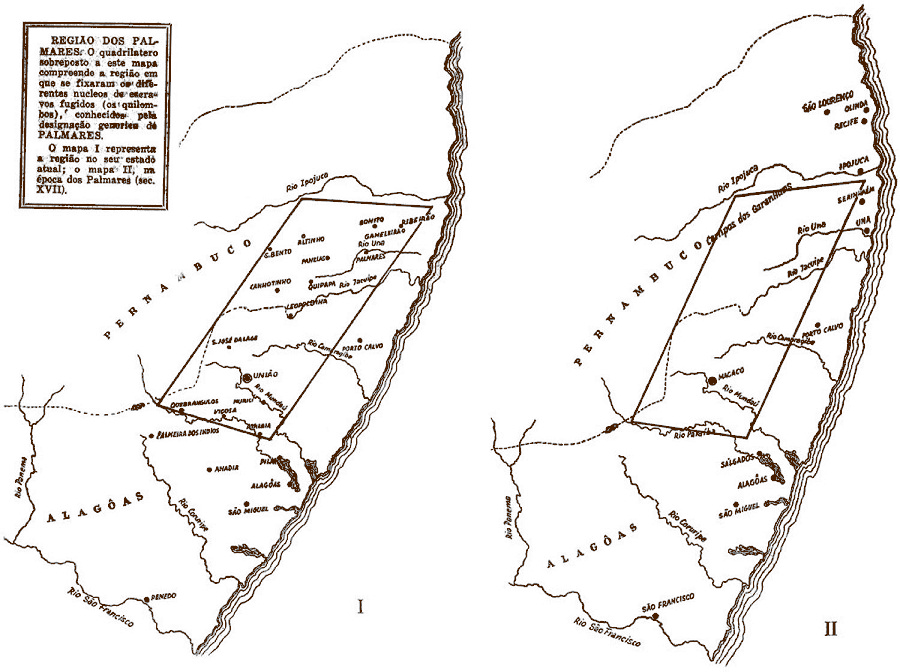
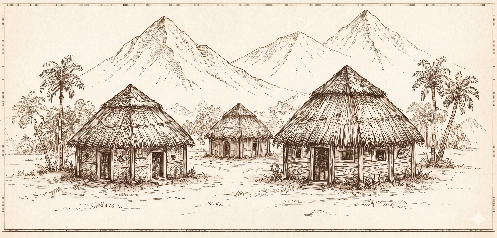

O Escudo
de Palmares
A força de Palmares estava no seu território. A natureza era uma grande aliada na defesa do quilombo.
A força de Palmares estava no seu território. A natureza era uma grande aliada na defesa do quilombo.

Armadilhas camufladas protegiam os caminhos. Inimigos desavisados caíam e eram neutralizados.
Barreiras reforçadas impediam a entrada repentina de tropas e criavam tempo para a resistência.
Palmares não enfrentava o inimigo apenas com força, mas com inteligência, agilidade e união.

Os guerreiros atacavam de surpresa, causavam impacto e recuavam rapidamente para a mata.
Informações eram coletadas por espiões infiltrados que avisavam sobre ataques e movimentações.
Palmares funcionava como uma grande rede. Quando um mocambo era atacado, os outros se mobilizavam.
MOCAMBO A
(Resistência)
MOCAMBO B
(Apoio)
MOCAMBO C
(Apoio)
MOCAMBO D
(Refúgio)
Se um caía, os outros resistiam.
LEGENDA